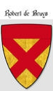

24035384 Lord Robert de Bruce
4:de Lorden av Annadale. Blev ca 50 år.

Far:
Född:
omkring 1195 Annandale, Dumfriesshire, Scotland. [1]
Död:
1245 Gisborough, Yorkshire, England. [2]
Barn:
Personhistoria
1195?
Födelse omkring 1195 Annandale, Dumfriesshire, Scotland
[1]
1245
Död 1245 Gisborough, Yorkshire, England
[2]
Källor